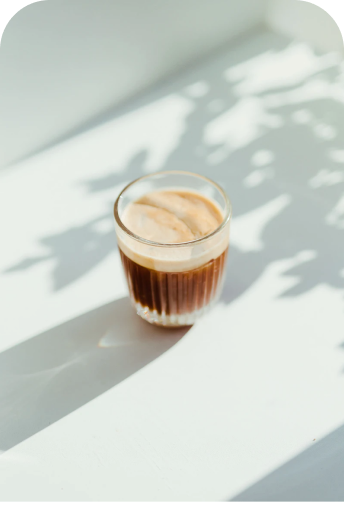
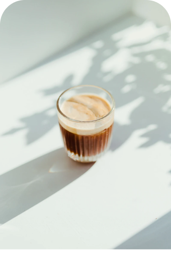
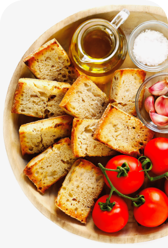
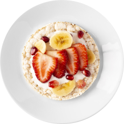
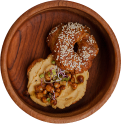
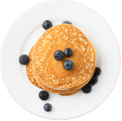
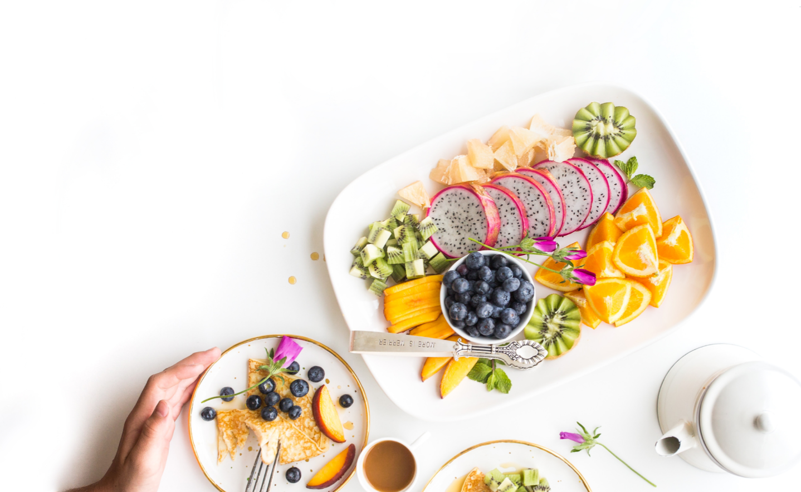

Svezia
Colazione con il pancake, solitamente alla marmellata, che come tutti
sanno induce assuefazione. E’ sul genere di una crepe, fritta da ambo le
parti, e si mangia anche con la panna.
Italia
La più classica delle colazioni consiste in una bevanda calda: caffè, tè,
oppure cappuccino, accompagnata da una brioche oppure dei biscotti.

Spagna
Il pane alla Catalana o pane col pomodoro è una delizia. Basta strofinare
aglio fresco e pomodoro maturo sul pane, aggiungere olio extra vergine e
sale e il gioco è fatto.


Porridge
Bagel
Pancake
Il porridge è un piatto ottenuto facendo bollire in acqua o latte chicchi
macinati, schiacciati o tritati di alimenti ricchi di amido e aromatizzati
a piacere.
Il bagel o beygel, è una pasta lievitata della cucina polacca ed ebraica,
il cui impasto, una ciambella salata, viene cotto al forno dopo una breve
bollitura in acqua.
Il pancake è un dolce tradizionale per la prima colazione
nell'America settentrionale e, con molte varianti, in altre parti del
mondo.



Support: gabrielenotarrigo@abacatania.it
© 2023 The Breakfast Lab. All right reserved.


About
Benefits
Career
Support

THE
BREAKFAST
LAB
BREAKFAST
LAB
home
breakfast
contact
about
search here
Dolce o salata non importa, la colazione è il vero biglietto da visita di
una nazione e della sua cultura e questo giro del mondo mattutino in cinque
colazioni ne è la prova.
Le colazioni nel mondo!
Scopri di più >